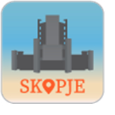

ABOUT US

This application was developed by HAEMUS - Centre for Scientific Research and Promotion of Culture and Forum Civil Peace Service (forumZFD) as part of the project "Radio Skopje Speaking". The application came as a result from a scientific research that was conducted by HAEMUS.
By looking at alternative stories, memories, histories and forgotten heritages this project aimed to explore new perspectives of the urban space of Skopje. The project, as well as this application, highlights Skopje as a city of solidarity and the heritage of the modernist architecture.
Skopje became known as a city of solidarity after the devastating earthquake that struck the city on 26 July 1963. As an immediate help, 88 countries worldwide offered their tremendous human and financial assistance to help rebuild the city. Soon after, the citizens of Skopje experienced an architectural expansion and, in a short period, from a city of debris, the city transformed into a modern city following all global architectural movements of that time.The new Skopje stood as a symbol of global solidarity and became the pride of brotherhood and unity of Yugoslavia at that time.
The buildings presented in this application belong to different movements of the modern architecture, but still play a vital role in the economic, cultural and political life of the city of Skopje. The information is intended for all aficionados of architecture but also those who would like to see the often hidden and neglected modern face of Skopje. The tours of this application, among others, cover the Brutalist architecture of Skopje, which is known to be the the largest collection of brutalist concrete buildings that reflect the concept of cosmic and undefined spatial design architecture.
The city tours are complemented with info on the buildings, as well as recommendations for itineraries and walks throughout the magnificent examples of Skopje's modernist architecture, offering a glimpse in the human connection of the places that are still shaping the local communities.
HAEMUS is a Center for Scientific Research and Promotion of Culture, founded in 2012. HAEMUS endorses historical and archaeological research, exploration, education, popularization, promotion and management of the cultural heritage of the Balkan Peninsula as a mutual benefit from the shared past.
HAEMUS strives to promote scientific research and culture on the Balkans, offering a wide range of cultural heritage services: research, cultural resource management, publication, education, promotion and cultural tourism.
HAEMUS manages 2 brands: SCUPINI ROMANI, dedicated to the promotion of the Ancient Roman heritage and "MARTINKI" Custom, since we legally safeguard an intangible cultural heritage inscribed on the Representative list of UNESCO.
forumZFD North Macedonia aims to contribute to public debates on dealing with the past in a constructive manner. Together with local partners we work towards overcoming conflicts and violence and support the development of sustainable structures for promoting tolerance and peace.
forumZFD (Forum Civil Peace Service) was established in 1996 with a mission to push for the "realization of the idea of a Civilian Peace Service" in Germany. forumZFD is a non-partisan organization. It is supported by 38 member organizations and more than 150 individual members. forumZFD carries out projects of the Civil Peace Service in the Middle East, through the Western Balkans and the Philippines. These include education about the origins and consequences of violent conflict, the establishment of dialogue between the opposing parties, the promotion of civil society and the reintegration of refugees and former combatants. In addition, projects of forumZFD within Germany at municipal level contribute to civil conflict management.